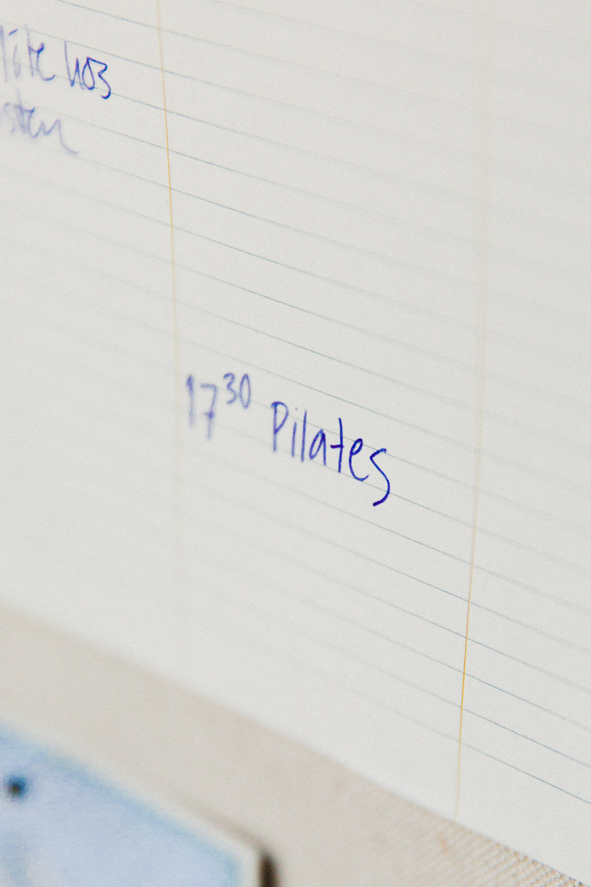

Pilates (/pɪˈlɑːtiːz/; German: [piˈlaːtəs]) is a physical fitness system developed in the early 20th century by Joseph Pilates, after whom it was named. Pilates called his method "Contrology". It is practiced worldwide, especially in Western countries such as Australia, Canada, the United States and the United Kingdom. As of 2005, there were 11 million people practicing the discipline regularly and 14,000 instructors in the United States. Pilates developed in the aftermath of the late 19th century physical culture of exercising in order to alleviate ill health. A study undertaken by the Australian Federal Government was published in 2015 based on research up to 2013. The conclusion of this review was that there was only limited evidence to support the use of Pilates to alleviate problems such as lower back pain. A new review, the Natural Therapies Review 2019-20, has been commissioned to determine whether Pilates (and other natural therapies) are effective, using up to date research. Whilst the 2015 Review looked at 13 studies, the Pilates Alliance of Australasia has submitted over 400 studies related to the effectiveness of Pilates.